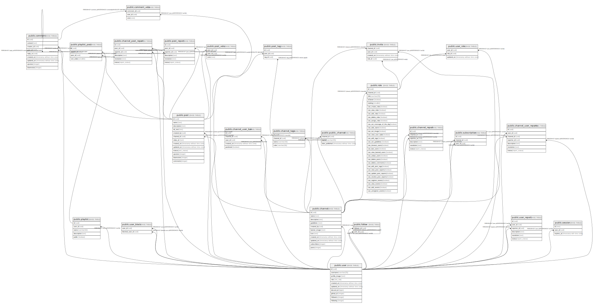

| Name | Columns | Comment | Type |
|---|---|---|---|
| public.channel_user_ban | 5 | BASE TABLE | |
| public.user_block | 2 | BASE TABLE | |
| public.channel | 7 | BASE TABLE | |
| public.comment | 7 | BASE TABLE | |
| public.follow | 2 | BASE TABLE | |
| public.invite | 4 | BASE TABLE | |
| public.playlist_post | 4 | BASE TABLE | |
| public.playlist | 5 | BASE TABLE | |
| public.post | 9 | BASE TABLE | |
| public.public_channel | 3 | BASE TABLE | |
| public.channel_post_report | 5 | BASE TABLE | |
| public.channel_report | 5 | BASE TABLE | |
| public.channel_user_reports | 6 | BASE TABLE | |
| public.post_report | 5 | BASE TABLE | |
| public.user_report | 5 | BASE TABLE | |
| public.role | 29 | BASE TABLE | |
| public.user_role | 3 | BASE TABLE | |
| public.session | 3 | BASE TABLE | |
| public.subscription | 3 | BASE TABLE | |
| public.channel_tags | 4 | BASE TABLE | |
| public.post_tag | 3 | BASE TABLE | |
| public.user | 6 | BASE TABLE | |
| public.comment_vote | 3 | BASE TABLE | |
| public.post_vote | 3 | BASE TABLE |

Generated by tbls